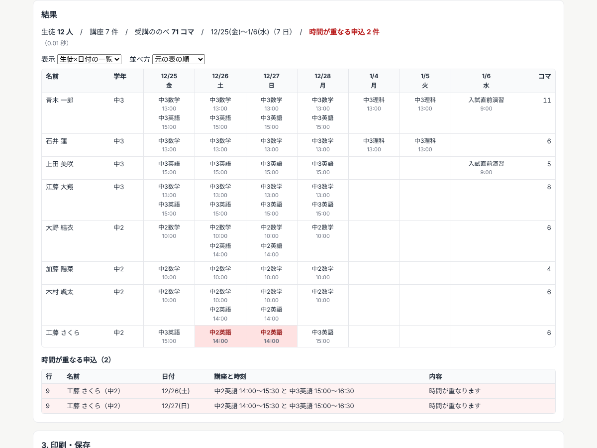

講習会の受講日程表
個人塾・学習教室の冬期・春期・夏期講習のためのツールです。申込の一覧（生徒×講座の ○）と講座の日程から、生徒ごとの受講日程表を1人1枚で印刷します。
- 生徒ごとの受講日程表：申し込んだ講座の日付・時刻・場所を日付の順に並べ、出席の ✓ 欄つきで A4 に2人分（切り取り）または1人分を印刷します
- 時間の重なりを知らせる：同じ日の同じ時間に2つの講座を申し込んでいる生徒を、日付と講座名つきで一覧にします。日程表でも網かけにします
- 講座ごとの人数と名簿：講座ごとの人数・定員を超えた講座・申込のない講座。名簿は講座ごとに1ページで、日付ごとの出欠の欄つき（出席簿として使えます）
- 生徒×日付の一覧：だれが何日の何時に来るかを1枚の表に。日ごとの時間割には、時刻・講座・場所と人数
- 日程の書き方：「中3数学 12/25〜12/28 13:00〜14:30 A教室」のように1行に1講座。「12/25・26・27」「日曜除く」「9:00 90分」「定員12」も読めます
ソフトのインストールは不要で、いつものブラウザで動きます。
500円（税込・買い切り）
お試し版はすべての機能を使えて、計算するのは申込の表の先頭10人までです。決済が終わると、そのまま製品版の画面に移動します。ブックマークしておけば、春期・夏期講習でも何度でも使えます。

見本のデータ（架空の名前）で作った例です。
こんなときに
- 申込用紙を集めたあと、生徒ごとに「何日の何時に何の講座か」を日程表に書き写している
- 講座が多く、同じ時間に2つ申し込んでいる生徒に後から気づく
- 講座ごとの人数と、だれが来るかの名簿（出席簿）を別に作っている
- 講習の期間中、日ごとに何人来るかを数えて、教室や講師の割り振りを決めている
できること
- 読める申込の表：①1行に1人で、講座ごとの列に ○・✓・1 など（空欄・×・0・なし は申込なし）。②「名前」「講座」の列の1行1件（「数学、英語」のように1つのマスに並べても可）。学年・組の列があれば一緒に載せます。同じ名前の行は1人にまとめます
- 講座名の合わせ方：申込の表の見出しと日程の講座名を、全角・半角や空白の違いを無視して合わせます。見出しが「中3数学（12/25〜）」のように講座名を含むときも合わせます。合わない講座名は一覧で知らせます
- 日程の書き方：日付は「12/25」「12月25日」「2027/1/5」、範囲は「12/25〜12/28」、並びは「12/25・26・27」「12/26, 1/5」。「日曜除く」「土日除く」。時刻は「13:00〜14:30」「10時〜11時半」「9:00 90分」。年をまたぐ冬期講習（12月〜1月）も、始めの月から年を決めます
- 知らせること：時間が重なる申込、時刻を書いていない講座が同じ日にある申込、定員を超えた講座、申込のない講座、日程にない講座名、同じ場所・同じ時間に入った2つの講座（場所を書いたとき）、日程の読めない行
- 印刷：生徒ごとの受講日程表（A4 に2人分／1人分、添える文と教室の名前）、講座ごとの名簿（出欠の欄つき）、生徒×日付の一覧（A4 横）、日ごとの時間割
- 保存：Excel ファイル（.xlsx）に、生徒ごと（日付の列つき）・受講の明細（1行1コマ）・講座ごと・講座ごとの名簿・日ごと・確かめたい所のシート。CSV は受講の明細と講座ごとの人数
- CSV（UTF-8・Shift_JIS）と Excel ファイル（.xlsx）を読めます。Excel の表をコピーして貼り付けても使えます
できないこと（購入前にご確認ください）
- 受講料の計算はしません（講座ごとの人数と、生徒ごとの講座の一覧は出せます）
- 時間割を自動で組む（重ならないように講座の時刻を決める）ことはしません。重なりを知らせるだけです
- 申込の受付（Web のフォーム）や、日程表のメール・LINE での送信はできません。印刷か、PDF に保存してお使いください
- 講座の日の祝日・休校日は自動では外しません。日程の行に書いた日付だけを使います
- 個人ごとの欠席・振替は記録しません（振替レッスンの残り回数 があります）
- スマートフォンでは操作しにくいため、パソコンでお使いください
Excel だけで作るなら
講座ごとの人数は、生徒×講座の表で C 列が1つの講座なら =COUNTA(C2:C100)（○の数）で数えられます。×・0 も書いてある表なら =COUNTIF(C2:C100,"○") のように、申込の印だけを数えます。
1人ずつの日程表は、日程の表（講座・日付・時刻・場所の列）にオートフィルターを付け、講座の列でその生徒の講座だけにチェックを入れて印刷する、を生徒の人数だけくり返すと作れます。
手作業で大変なのは、生徒の数が多いとき（フィルターの付け替えと印刷を人数分くり返す）と、時間が重なる申込を見つけるとき（生徒ごとに、同じ日の講座の時刻を見比べる）です。このツールは、表を読み込むだけで全員分の日程表と重なりの一覧を一度に作ります。
よくある質問
| データはどこかに送られますか？ | 送られません。読み込み・計算・印刷・保存はすべてお使いのブラウザの中で行います。講座の日程・表題・教室の名前・添える文だけをブラウザに保存し（次の講習で書き直せます）、生徒の名前は保存しません。 |
|---|---|
| 同じ講座で、日によって時刻が違います | 講座名を同じにして、行を分けて書いてください（例：「中3数学 12/25〜12/27 13:00〜14:30」「中3数学 12/28 10:00〜11:30」）。1つの講座にまとめます。 |
| 「重なり」は、どう判定しますか？ | 同じ生徒の、同じ日の2つの講座で、始まりから終わりまでの時間が少しでも重なると知らせます。14:30 に終わる講座と 14:30 に始まる講座は重なりとしません。終わりの時刻を書いていない講座は、始まりの時刻だけで比べます（ほかの講座の時間の中に始まりがあれば重なり）。時刻を書いていない講座が同じ日にあるときは、重なりとは別に「同じ日」として知らせます。 |
| 何人まで使えますか？ | 製品版は人数の制限はありません（3,000人・30講座の計算を、手元のパソコンで約0.1秒で終えることを確かめています）。 |
安心してお使いいただくために
- 表はお使いのブラウザの中だけで処理し、サーバーには送信しません
- 動作環境：最新版の Chrome・Safari・Edge・Firefox（パソコン）
- 説明どおりに動かない場合は、ご購入から7日以内にご連絡いただければ返金します
月謝の請求額には 月謝の請求額の一覧、ふだんの月のレッスン日には 月ごとのレッスン日と回数、面談の日時の割り当てには 面談の日時の割り当て もあります。